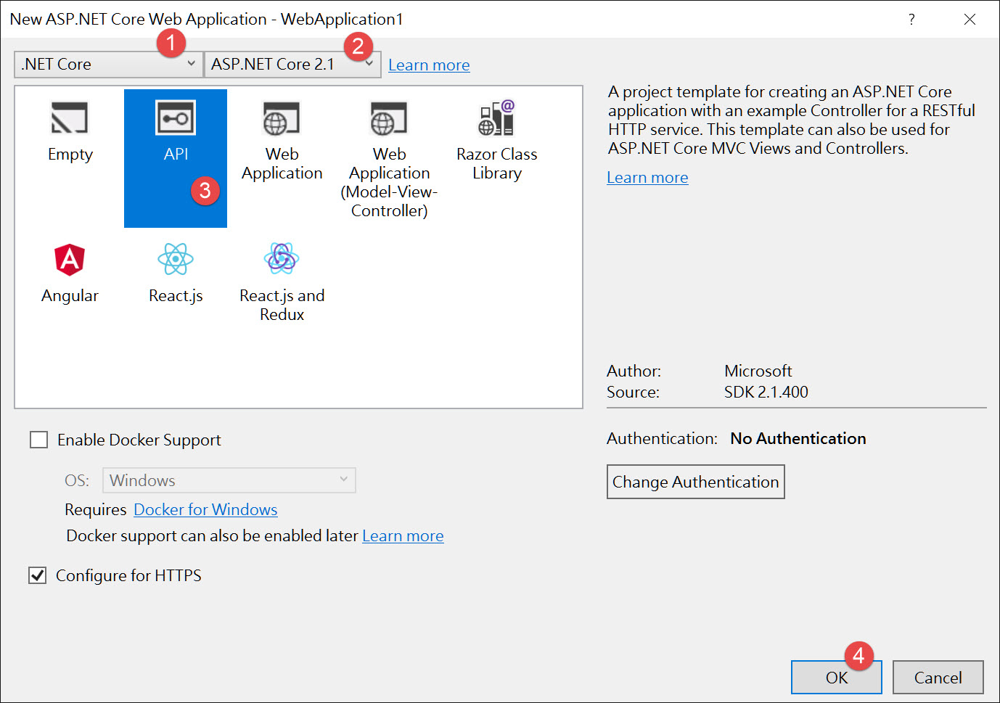
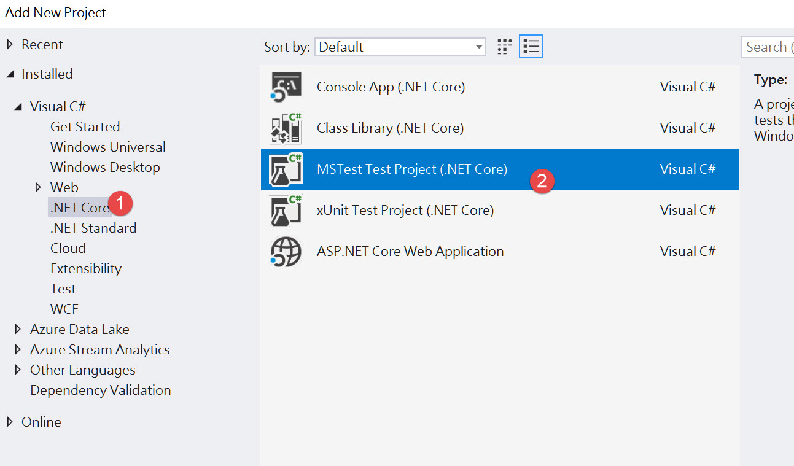
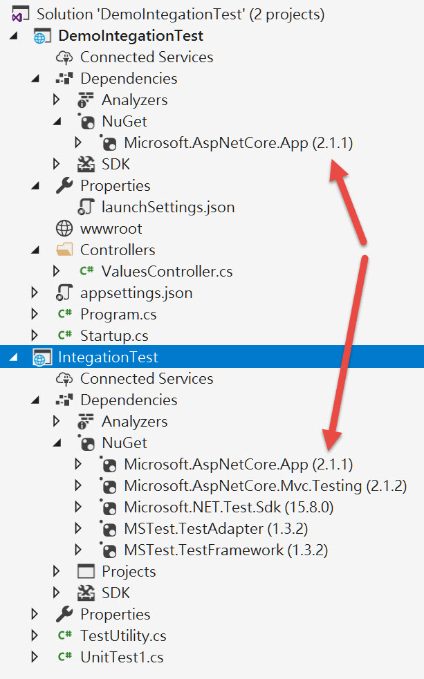
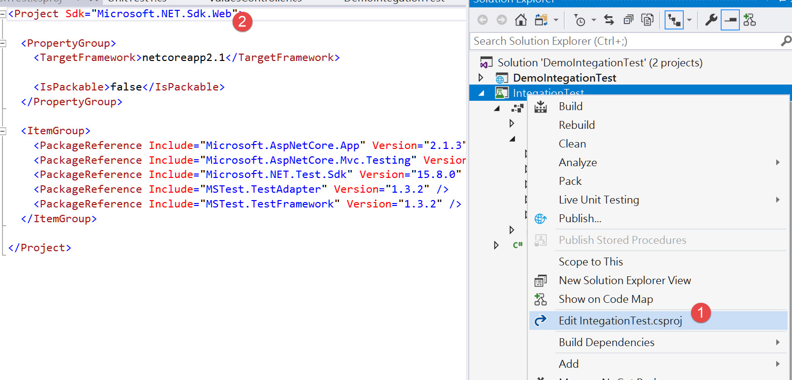

本篇說明如何用 Asp.Net Core 2.1 開發 WebApi 時做整合測試。
設定專案
首先新增 WebApi 專案

接著新增測試專案

然後用 nuget 增加兩項必要套件
Microsoft.AspNetCore.App 和 Microsoft.AspNetCore.Mvc.Testing。
其中 Microsoft.AspNetCore.App 的版本要和 WebApi 專案版本相同

最後修改專案sdk，改成 Microsoft.NET.Sdk.Web

這樣整合測試專案算是設定完成
建立 HttpClient
接著我們需要產生測試用的 WebHost 和 HttpClient。
在測試專案新增 TestUtility.cs，內容如下
1
2
3
4
5
6
7
8
9
10
11
| [TestClass]
public class TestUtility {
public static WebApplicationFactory<Startup> Factory { get; private set; }
public static HttpClient Client { get; private set; }
[AssemblyInitialize]
public static void Initialize(TestContext context) {
Factory = new WebApplicationFactory<Startup>();
Client = Factory.CreateClient();
}
}
|
在 Initialize 中，建立 WebApplicationFactory 的實體，Startup 為待測專案的啟動物件。
此時就會建立測試用的 WebHost，再用取得的實例產生 HttpClient。
測試 API
改寫一下待測專案的 ValueController 裡的一個 method
1
2
3
4
| [HttpGet("{id}")]
public ActionResult<string> Get(int id) {
return $"value is {id}";
}
|
然後用測試專案來測試此 API
1
2
3
4
5
6
7
8
9
| [TestClass]
public class UnitTest1 {
[TestMethod]
public async Task TestMethod1() {
var response = await TestUtility.Client.GetAsync("api/Values/123");
var result = await response.Content.ReadAsStringAsync();
Assert.AreEqual("value is 123", result);
}
}
|
基本的整合測試大概就是這樣，下一篇會說明客製化測試環境的方式。